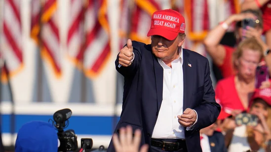

Trump has chosen his nominee for vice president; US Senator Rubio told he will not be his running mate
Trump has chosen his nominee for vice president, an AP source says. We will see the pick for the first time at 4:37 p.m. ET, the source said. Donald Trump is expected to reveal his Vice President pick imminently on Monday. As speculation continues, three prominent figures are considered likely candidates for the nomination.
US Senator Rubio told he will not be Trump's running mate U.S. Senator Marco Rubio of Florida has been told he will not be Republican presidential candidate Donald Trump's running mate, four sources told Reuters on Monday. Advisers to Trump, whose party is expected to formally announce his vice presidential pick later in the day, had viewed Rubio's residency in Florida as a drawback. The U.S. Constitution bans the electors who formally select the president and vice president from voting for both from their home state - and both Trump and Rubio call Florida home. While Rubio could likely have overcome that hurdle by moving out of state, some advisers were wary media coverage of such a move would be a distraction for the campaign.
Comments
hero: nice